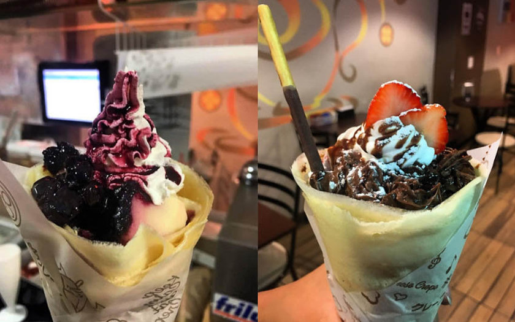
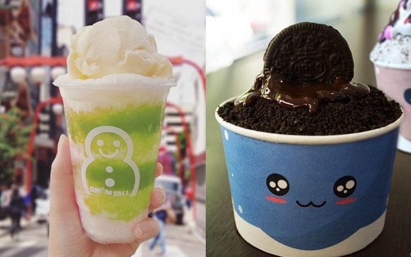
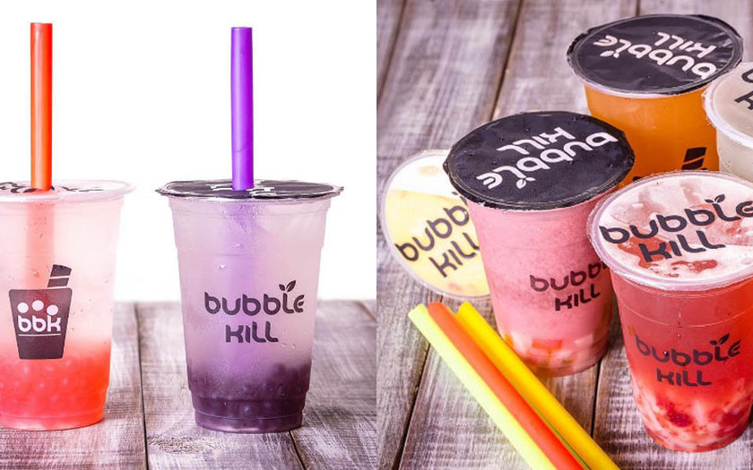

Este site mostra um pouco sobre o bairro da Liberdade que fica localizado no estado de São Paulo
O bairro da Liberdade, em São Paulo, atrai turistas do mundo inteiro. A região é conhecida por abrigar a maior comunidade japonesa do mundo fora do Japão. Além disso, as feiras, restaurantes, parques e construções características da arquitetura asiática também chamam a atenção das pessoas que passam por este bairro que se destaca no centro da capital paulistana. Entretanto, o que pouca gente sabe é que a região antes era habitada pela comunidade negra e que, ao longo das últimas décadas, parte desta memória foi ocultada.
Nos últimos anos, alguns episódios que ocorreram na Liberdade trouxeram à tona o debate sobre o multiculturalismo da região. De acordo com o jornalista e pesquisador Abilio Ferreira, que estuda a região, esta cadeia de acontecimentos começou em 2016, quando o cantor Aloysio Letra escreveu uma música chamada "Rua da Glória", que fala sobre a história da região. No mesmo ano de lançamento da canção, o Conselho Municipal de Preservação do Patrimônio Histórico, Cultural e Ambiental da Cidade de São Paulo (CONPRESP) iniciou o processo de tombamento patrimonial do bairro. Segundo a entidade, a decisão é uma forma de preservar a dimensão sociocultural da história e da paisagem local.
Antes mesmo de ganhar o nome Liberdade, quando ainda era conhecida como "Bairro da Pólvora", a região era majoritariamente ocupada por pessoas negras. O que conhecemos hoje por Largo da Liberdade, por exemplo, era antes chamado de largo da Forca, visto que era o local onde escravizados fugitivos eram executados após serem condenados à pena de morte.
Além disso, o Cemitério dos Aflitos, construído entre 1774 e 1775, é outro importante ponto para entender a história da região. Situado entre a Rua dos Estudantes, a Rua Galvão Bueno, a Rua da Glória e a Radial Leste, o local a céu aberto era reservado ao sepultamento de escravizados, indígenas, e de condenados à morte na forca. Com a inauguração do Cemitério da Consolação, em 1858, o espaço parou de ser utilizado. Dessa forma, somente a Capela de Nossa Senhora dos Aflitos ainda está preservada.
A iguaria é feita nas opções doce e salgada no Hachi Crepe & Café. São muitas as sugestões de sabores, tem de Oreo, frutas vermelhas, brownie, calabresa e frango com catupiry. Os preços vão de R$12 a R$18. Endereço: Rua Galvão Bueno, 586
A sobremesa é pra lá de famosa e já tem três unidades em São Paulo. Na Liberdade, a loja Snow Fall vende a delícia em vários sabores e no tamanho pequeno, que custa R$12, e o grande por R$19. Endereço: Rua dos Estudantes, 73
A bebida é pura refrescância e super personalizável. Na Bubble Kill, você escolhe a base, que pode ser chá, água, leite ou Yakult, o sabor das bolinhas que vão dentro do copo e a fruta. O preço vai de R$12, o de 500ml, a R$15, o de 700ml. Endereço: R. dos Estudantes, 28
